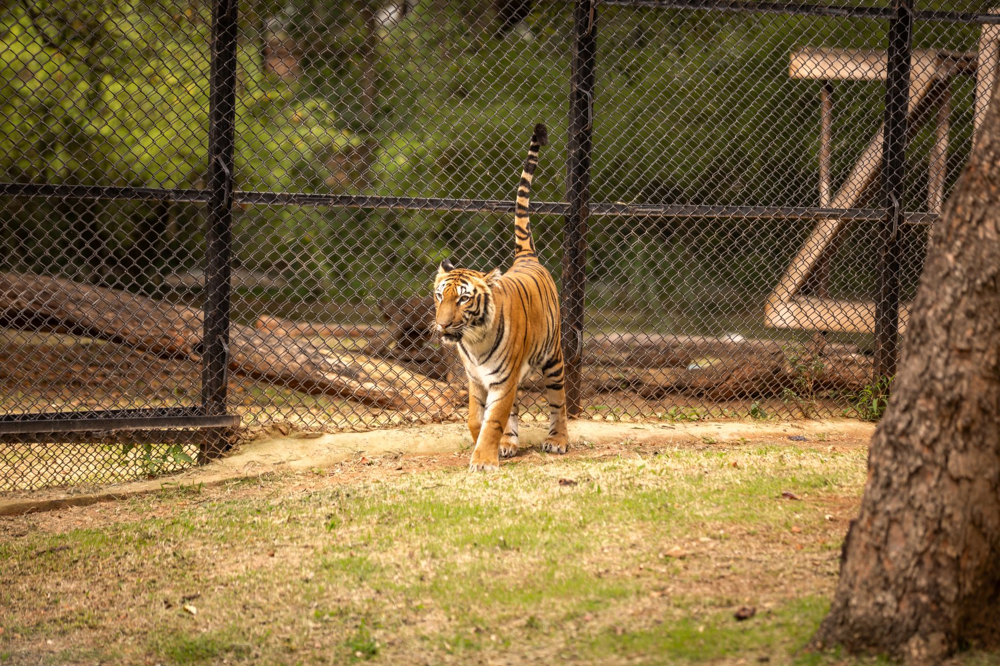

The details of the fatal encounter
According to evidence presented at the inquest, the victim did not simply fall into the enclosure but actively climbed over two separate fences to enter the tiger's habitat. This intentional breach of security measures placed the individual in immediate danger of a predatory attack.
Once inside the enclosure, the man was quickly targeted by the tiger. Witnesses and investigators noted that the animal acted according to its natural instincts, resulting in a violent struggle that the man could not survive despite the efforts of nearby staff to intervene.
Injuries and forensic findings
The inquest heard that the victim suffered multiple catastrophic injuries during the attack. Forensic reports indicated that the tiger caused severe trauma to the neck and upper body, leading to rapid blood loss and respiratory failure.
The sheer force of the animal's strike made any chance of survival nearly impossible once the initial contact was made.
Medical examiners confirmed that the cause of death was a combination of massive hemorrhaging and crushing injuries, highlighting the lethal power of these apex predators when they are provoked or perceive a target.
Security measures and safety failures
A primary focus of the legal proceedings has been whether the facility's safety protocols were sufficient. The fact that a visitor was able to scale two separate fences has raised questions about the height and design of the barriers intended to keep humans out and animals in.
Facility managers have argued that the barriers met industry standards, but the inquest is examining if additional deterrents, such as electric fencing or motion sensors, could have prevented the tragedy.
The psychology of risky behavior
Experts in wildlife behavior and psychology are weighing in on why an individual would take such an extreme risk. In many similar cases, individuals may be under the influence of substances, experiencing a mental health crisis, or attempting to create viral content for social media.
This incident serves as a grim reminder that wild animals, even those born in captivity, possess unpredictable instincts. The perception that a captive animal is tame often leads to a dangerous lack of respect for the boundaries established for public safety.
Legal implications and future precautions
The outcome of the inquest will likely influence how zoos and wildlife parks manage their enclosures globally. If negligence is found, the facility could face heavy fines or be forced to implement costly infrastructure upgrades to ensure such a breach never happens again.
Authorities are urging the public to always follow posted rules and never attempt to touch or approach wild animals. The loss of life in this case is seen as a preventable tragedy that resulted from a total disregard for safety warnings.
Staying informed on global tragedies
Whether it is a freak accident at a zoo or the systemic devastation caused by international conflict, staying informed about current events helps us understand the fragility of safety. These stories remind us that vigilance is necessary in all aspects of life.
For those following other critical global updates, we recommend reading our detailed report on the Ukraine Power Outages and Starlink Impact in War Update at https://dhyey.bond/blog/ukraine-power-outages-and-starlink-impact-in-war-update/ to see how technology is being used in crisis zones.
See Also
If you enjoyed this Current Events article, check out Ukraine Power Outages and Starlink Impact in War Update for more useful reading.